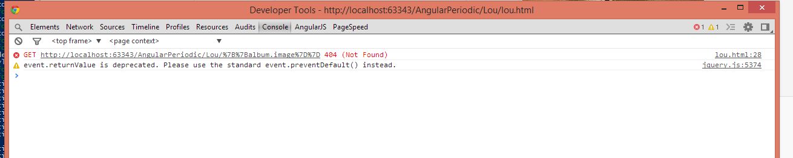

AngularJS is a Javascript MVC framework from the fine folks over at Google. The focus of Angular is building complex HTML based client applications. Its design philosophy is data first, where your data will be updating the DOM. Contrast this to a framework like JQuery where the DOM will update your data.
This is the fifth in a series of posts on AngularJS where we are using Chemistry data from the periodic table to help us understand the framework. The others posts are
Note: AngularJS does not allow for more than one ng-app directive. When I have multiple angular posts on the home page of my blog, only one application will work. I need to refactor the entire site to account for this. All of that to say this, you are best clicking on a single article so you can see the pages in action.
If you have spent any time with me in the real world, you quickly come to realize I am a music fan. If you have spent a little time with me, especially when I was a younger, you realize I am a huge Lou Reed fan too. My boss, Tim VanHammond still holds it against me the one time I played Lou Reed's the Possum song without headphones when he was in the office we shared. The reality is, I probably spent WAY too much time listening to Lou Reed and Velvet Underground music when I was a teenager. So, having said all that, soon after Lou Reed died, I was doing a presentation at the NorthEast Wisconsin Developer UserGroup (aka, NEWDUG and yes it is a lot to type) and I thought it would be fun to have a little Lou Reed shout out. Since the talk was about AngularJS, it of course had an Angular flavor. So we did a little Lou Reed segue, and talked about binding images using AngularJS. Most important and of interest to you dear reader, is how I found out a way to deal with missing images!
Instead of using chemistry data, we used Lou data. This data was a JSON object of record releases. Lou put out a lot of albums, and we are loading images, so to keep things quick, we are just doing the first few releases. One of our Lou objects looks like
{
"album": "Lou Reed",
"artist": "Lou Reed",
"releaseDate": 6/1/1972,
"image": "http://upload.wikimedia.org/wikipedia/en/8/88/Lour72.jpg",
"label": "RCA"
}
Essentially what we are doing is the same stuff that came before, instantiating the app and referencing our controller and looping through the albums and making a little table. This is quickly becoming old hat for us!
| Album | Release | Producer | Label | |
|---|---|---|---|---|
| {{album.album}} | {{album.releaseDate|date}} | {{album.producer}} | {{album.label}} |
Note: There is an issue with the markup being generated by DocPad prepending the local URL. You can see the actual correct HTML at http://angularperiodic.azurewebsites.net/lou/lou.html until the I fix this.
Again, we have done this before. The interesting thing to note though is the album release date. JavaScript and
dates are something that make me a little crazy, but having said that, AngularJS does a nice job. You can pass
a JSON date object to a filter and have it format, {{album.releaseDate|date}} as above. More info on the date
filter at the AngularJS site.
The second thing to notice is we are using a src attribute in our img tag. Things are loading fine, but if
you look at the page load, you will actually see a 404 error that happens.

This is because the AngularJS functionality is executed AFTER the page loads. We are still making the get request
that the src attribute had identified because we have yet to get into the javscript
processing on the page. With src attributes and href tags you that reference
AngularJS objects, this is something you need to be cognizant of. The fix is easy enough, we just prepend a ng tag on our
attribute. This will then be part of the page processing that happens during the Angular load. Our image reference
is now
<img ng-src="\{\{album.image\}\}" alt="\{\{album.album\}\} Cover Image" width="300px;" height="300px;">
| Album | Release | Producer | Label | |
|---|---|---|---|---|
| {{album.album}} | {{album.releaseDate|date}} | {{album.producer}} | {{album.label}} |
 You can see the example below
You can see the example below
| Album | Release | Producer | Label | |
|---|---|---|---|---|
| {{album.album}} | {{album.releaseDate| date:'medium'}} | {{album.producer}} | {{album.label}} |
The fix is easy enough though! We can add an on error function within our img tag. First, we want to add a
default local image we can reference. So let us use the Wikipedia image that I have at the top of our page.
Within our img tag we add an onerrror function like so
onerror="this.src='Lou_Reed.jpg'"
so that our entire img tag is now
<img ng-src="\{\{album.image}}" alt="\{\{album.album\}\} Cover Image" width="300px;" height="300px;">
and we now handle missing images on page load (with ng-src) and missing images in our data source, with onerror by placing a default placeholder image for missing images.
| Album | Release | Producer | Label | |
|---|---|---|---|---|
| {{album.album}} | {{album.releaseDate| date:'medium'}} | {{album.producer}} | {{album.label}} |
So the when I gave my presentation someone asked me favorite Lou Reed album... Hard one, I think at various times most of them have been a favorite, but I will go with New York. Favorite song, same as album, it changes, but let's call it Street Hassle.
You can either visit http://angularperiodic.azurewebsites.net/ to see the code in action and as always find the code out on GitHub
(I am working on some display issues with the post with the Markdown/DocPad combo, I should have updated soon)